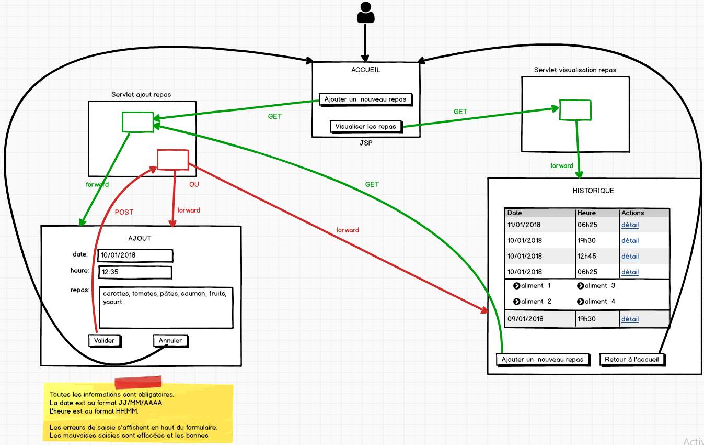

TP 1
Suivi des repas
Enoncé
A partir d'un nouveau Dynamic Web Project, créer l'application suivante.
Description fonctionnelle
L'application doit permettre à un utilisateur d'enregistrer ses repas au fil des jours dans un but de consultation.
Eléments d'architecture
L'application se nomme TPSuiviDesRepas.
Mettre en œuvre une architecture correspondant à celle présentée en cours.
-
La base de données est composée de deux tables :
une table REPAS pour stocker la date et l'heure du repas.
Une table ALIMENTS pour enregistrer le nom des aliments (un enregistrement par aliment par repas).
-
Un formulaire de saisie permet l'ajout d'un nouveau repas.
Ce formulaire est composé de trois champs.
Un champ pour la date, un champ pour l'heure et un dernier champ pour les aliments.
Les aliments sont saisis dans une seule zone. La virgule sert de séparateur.
Charge à vous de faire le traitement nécessaire côté serveur.
-
Un formulaire permet d'afficher les repas déjà saisis par ordre chronologique du plus récent au plus ancien.
Une seule requête SQL doit permettre de sélectionner les informations à afficher.
-
Proposition de maquette :

Étapes
Les étapes, par ordre de priorité :
- Étape obligatoire : Mettre en place la navigation.
- Étape obligatoire : Réaliser l'écran d'ajout sans gestion des erreurs.
- Réaliser l'écran d'affichage de la liste sans gestion des erreurs.
- Mettre en place une gestion des erreurs fonctionnelles sur l'écran d'ajout.
- 5. Mettre en place une gestion avancée des erreurs techniques.
Pour aller plus loin
Réaliser un formulaire permettant de filtrer sur les repas d'une journée.
Gérer le cas où aucun repas n'est disponible pour le jour sélectionné.